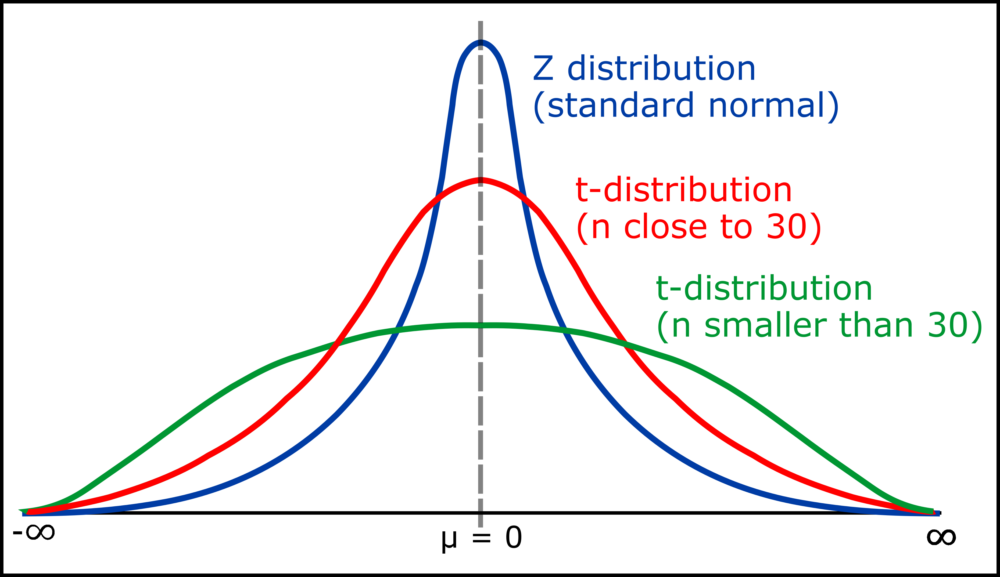

AB Testing Stats Overview
In this guide, we will review the two statistical tests commonly used in AB Testing to compare the metrics of the different interfaces:
t-test for difference of means and chi-squared test for homogeneity.
Understanding Statistical Tests
This section will mostly be covered by the lecture. Therefore, this section will just be a quick overview.
T distribution
We will be using the student T distribution (T-dist). To garner a p-value from the T-dist, we need the t-score and the degrees of freedom (df).
The image below shows how the degrees of freedom affect the t-distribution.  Notice how as the df increases, the distribution becomes normal.
The next image simulates the definition of a p-value.
The one of the red shaded areas represent the area that your t-score encases on the t-distribution (this shows the areas are the same for the t-score even if the sign changes).
Therefore, the further away your t-score is from zero, the lower the p-value.
Calculating this red area corresponding to your p-value is a complicated integral: a calculator is necessary.
Chi^2 distribution
While the t-test is aimed at large sets of 2 samples to be compared, the chi^2 test is suited for comparing how categories are different. Therefore, it is a completely different distribution.
 Is it skewed right but gets more even as df increases.
As before, we need df to calculate the p-value from this distribution. However, instead of a t-score, this test uses a chi^2 value.
Is it skewed right but gets more even as df increases.
As before, we need df to calculate the p-value from this distribution. However, instead of a t-score, this test uses a chi^2 value.
This time, the chi^2 value is stritcly positive (it's a squared value), and the p-value area corresponds to the red shaded region in the image below.

Interpreting P-value
With each test, your script will calculate a p-value. We will compare this p-value against our significance level (which is .05). The comparison will then tell us what to do with our set of hypotheses for each metric.
If your p-value < significance level (.05) , then you can reject the null. Therefore, your results are statistically significant, meaning that there is a high chance the alternative hypothesis will repeat itself in other trials or situations.
If your p-value > significance level (.05) , then you fail to reject the null. Therefore, your results are statistically insignificant, meaning that there is a doubt as to whether the alternative hypothesis will repeat itself in other trials or situations.
Yes, stats is wordy, but it is important that we see you interpreting the results in your submission of the assignment. To someone who doesn't study stats, the numbers mean nothing. So when making your conclusions with your p-value, you must contextualize the cookie cutter responses above with your metric you were testing so that anyone could understans your results.
Performing the T-tests
Below will explain the mathematics to perform a two sample t-test for the difference of means. Your task is to take the math and turn it into code so that, for any dataset given as lists, you can easily get a p-value. However, it is still your job to intepret the p-value. The number alone is not enough.
Mean and STD
To begin t-test, we need the mean and standard deviation of both samples.
The mathematics for the average (mean) is trivial.
For standard deviation:

where i is an element in the list, avg is the average of all elements in the list,
and n is the number of elements in the list.
Standard Error
Next, we need to calculate the standard error.
where std_a is the standard deviation of a, std_b is the standard deviation of b,
n_a is the number of elements in a, and n_b is the number of elements in b.
As seen in the formula above, you'll need to calculate standard deviation for both a and b as part of calculating
standard error.
df Calculation for Two Samples
Then, we need the combined degrees of freedom between our two samples, a very complicated problem, but the formula below is a really good approximation for when you have more than 5 users.

where se is the standard error, std_a is the standard deviation of a, std_b is the standard deviation of b,
n_a is the number of elements in a, n_b is the number of elements in b,
and round(x) rounds x to the nearest integer.
T-score and P-value
Now we can calculate our t-score.
where se is the combined standard error, avg(list) is the average of the values in the list.
Lastly, you must use a calculator's cumulative t distribution function (cdf) to convert the t-score and degrees of freedom into a p-value.
Performing the Chi^2 Test
Expected Values
Calculating expected values depends wholly on the counts in the grid.
The formula is simple but needs some context.
 Row total will be the sum of all the numbers in the same row of the element.
Row total will be the sum of all the numbers in the same row of the element.
Column total will be the sum of all the numbers in the same column of the element.
Grand total is the sum of all the elements in the grid.
The following images (source) shows an example in practice.
 Above is the grid of counts.
Below is the formula applied.
Above is the grid of counts.
Below is the formula applied.
 In our case, instead of men and women, we will have A and B. Also, instead of cat and dog, our metric will be there.
In our case, instead of men and women, we will have A and B. Also, instead of cat and dog, our metric will be there.
Keep in mind that the grid isn't always square: we can have multiple categories for both A and B.
df for Chi^2
Df is very simple to calculate for a chi^2 test of homogeneity.
df = (rows − 1) × (columns − 1)
Therefore, for a 2by2, df = (1)(1) = 1
For a 2by4, df = (1)(3) = 3
Chi^2 and P-value
Now we can calculate our chi^2 value. The formula is below.
 The fancy X^2 stands for Chi^2.
The fancy X^2 stands for Chi^2.
You must apply the formula to each element in the grid. Luckily we now have two corresponding grids,
one with the observed counts and the other (created by the helper function above), with the expected counts.
Lastly, with your chi^2 value and degrees of freedom, you must use a cdf chi^2 function to calculate the p-value.